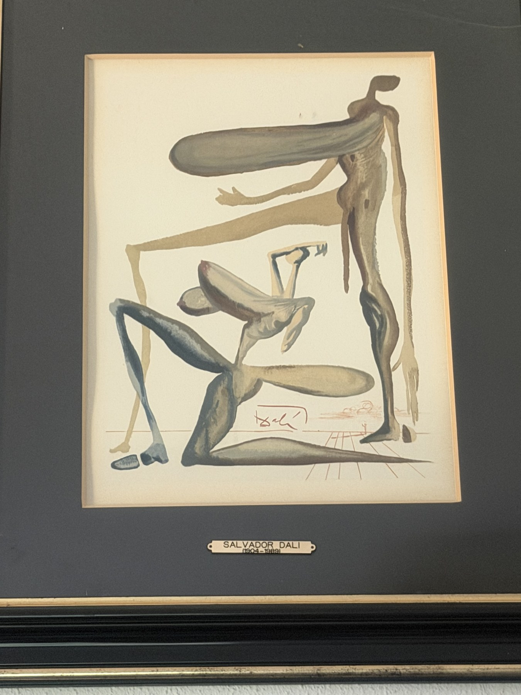

Art · objets · patrimoine bâti
Regarder autrement ce qui traverse le temps.
Chercheur de Trésor est un carnet de découvertes guidé par la matière, les savoir-faire et les histoires silencieuses que portent les œuvres et les lieux.
Découvrir la sélection
Le regard du moment
Œuvres choisies
Six pièces parmi une collection plus vaste, réunies pour la force de leur présence, leur matière et les récits qu’elles suggèrent.
Derrière le regard
Une passion patinée par le temps.
Depuis 30 ans, je cultive ma passion pour l’art et la restauration du patrimoine bâti. Chercheur de Trésor est né du désir de partager les œuvres et les détails qui retiennent mon regard.
Découvrir mon parcours- 01ObserverPrendre le temps de voir la matière et le geste.
- 02DécouvrirFaire dialoguer les œuvres, les objets et les lieux.
- 03TransmettrePartager ce qui mérite d’être regardé et préservé.
Échanger autour d’une découverte
Une œuvre, un objet ou un lieu vous intrigue ?
Racontez-moi ce qui a retenu votre attention. Ce formulaire de démonstration n’envoie encore aucune donnée.